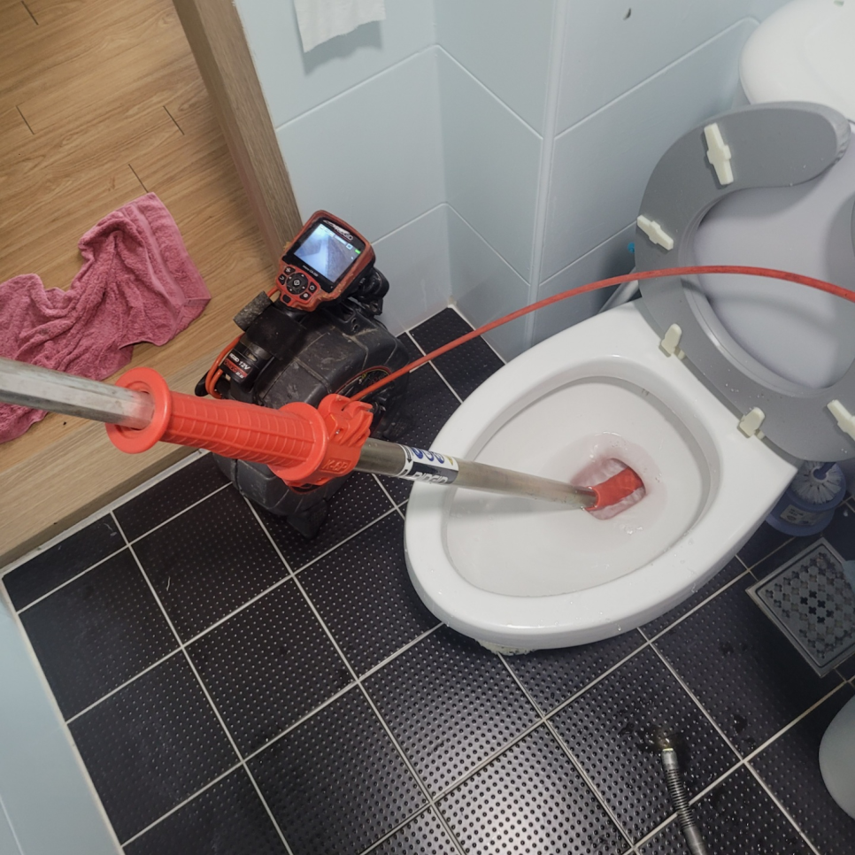
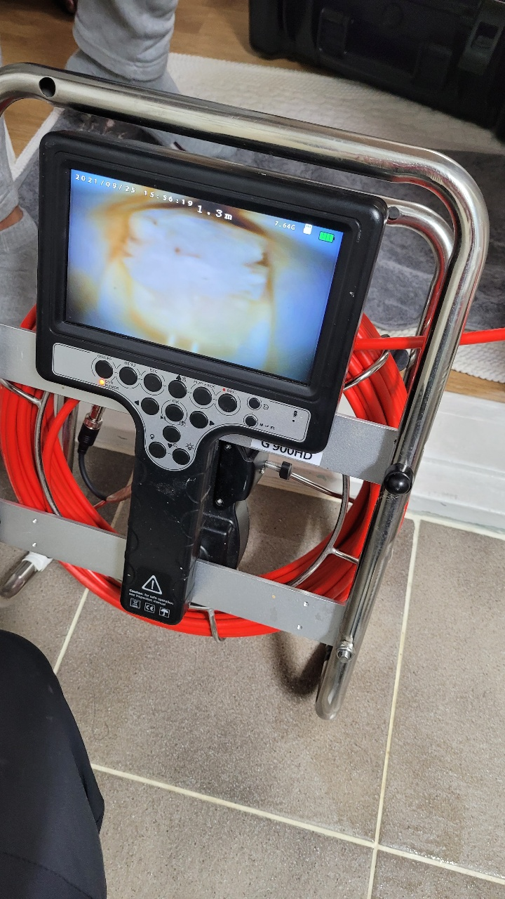
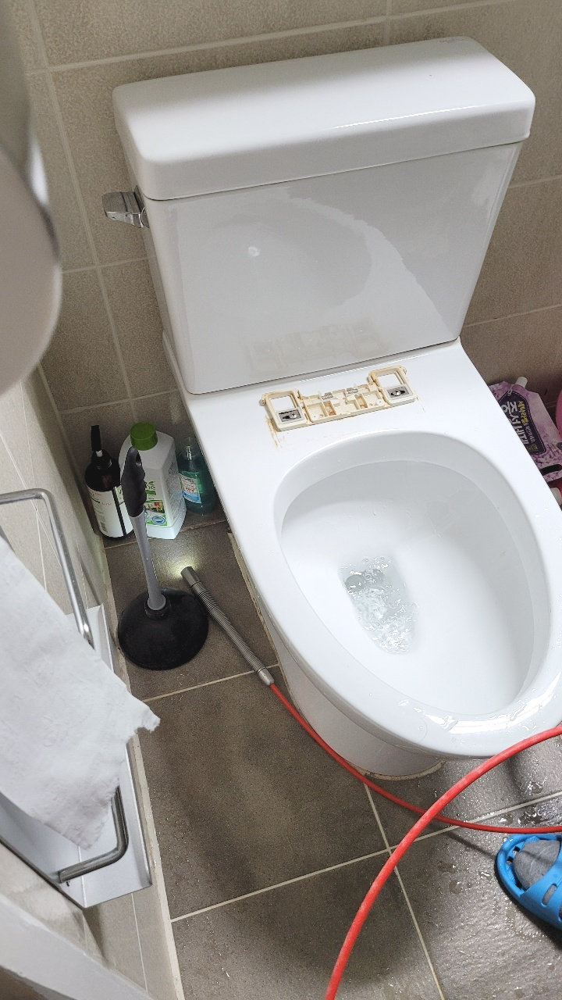
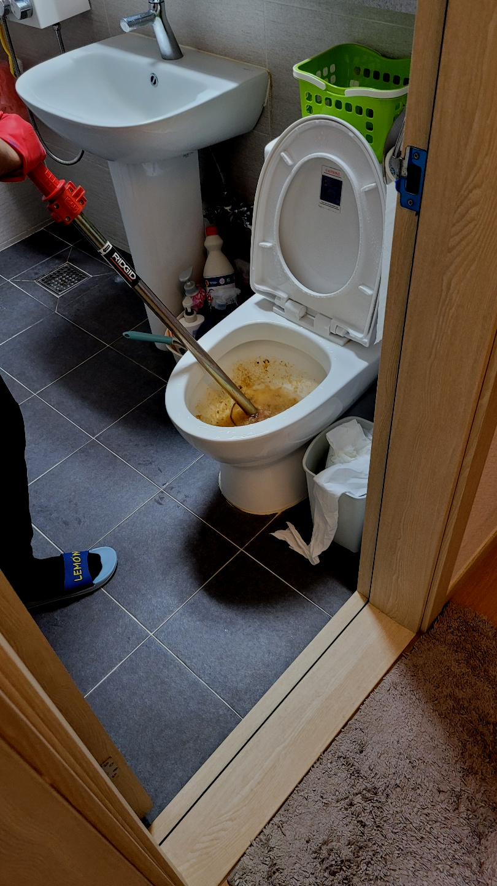
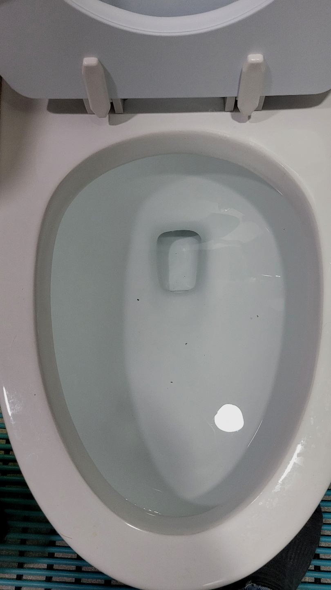
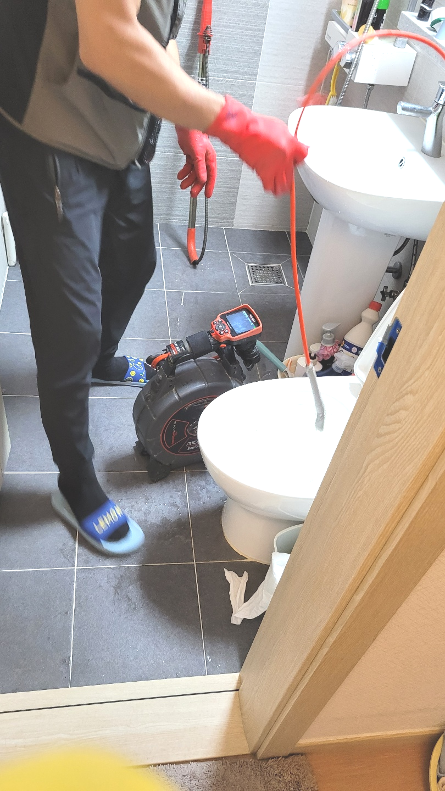

🏠 수지 고기동 변기막힘 뚫음 신봉동 변기역류증상 해결 전문 수리설비업체
용인 신봉동 싱크대막힘 전문 시공 후기

📋 작업 개요
- 위치: 용인 신봉동, 신봉동, 용인
- 서비스 유형: 싱크대막힘, 변기막힘, 하수구막힘, 배관막힘, 누수수리, 역류해결, 뚫는업체, 배관청소
- 작업 일시: 2023. 11. 23. 0:16
- 업체명: 하수구수사대 (010-5615-2118)
🔍 문제 상황
안녕하세요^^
설비전문업체 "하수구수사대"를 찾아주셔서 감사드려요^^
우리가 살아가면서 정말 필요한 배관 설비시설을 변기,싱크대,세면대 등 물을 사용하는 공간이 아닐까 생각합니다.
정말많은 분들께서 뚜러뻥같은 약품을 필수로 구매할만큼 중요한요소로 생각하시는데요 배수막힘이 심한 경우에는 이 조차도 소용이 없을 때가 많답니다.
수지 고기동 변기막힘 뚫음 신봉동 변기역류증상 해결 전문 수리설비업체

🔎 원인 분석
💡 전문가 진단: 수지 고기동 변기막힘 뚫음 신봉동 변기역류증상 해결 전문 수리설비업체
배출구막힘의 원인을 해결하기 위한 단계로는 먼저 배관 내부에 쌓여있는 이물질들을 제거하기 위해서 청소작업을 진행하게 되었는데요. 저희는 많은 장비를 보유하고 있기 때문에 배관 내부의 상황에 맞는 장비를 이용해서 작업을 하게 됩니다.
배관의 상태나 구조에 따라서도 추가 비용이 발생될 수 있는 것인데요. 이는 바로 작업량이 늘어나기 때문입니다. 가정이 아닌 카페나 음식점 등과 같은 업체에서의 하수구 막힘 비용은 보통에서 조금 더 나간다고 생각해 주시면 되는데요.
뚫음 현장뿐만 아니라 부속품 교체를 하거나 누수현장도 실생활에 필요한 모든 부분들을 도와드리고 있어요. 혼자서 어려울 경우 저희 배수구뚤어드림을 통해 도움을 받아보세요. 어려운 현장이라고 하여도 항상 완벽하게 작업해 드려요.
전문장비를 갖춘 곳이라면 문제 상태에 따라 적절한 작업이 진행될 것고 현장 기술자의 경우 퇴수막힘 장비를 단번에 정해야 해요. 혹여나 준비되지 않은 업체는 작업의 신속성이 감소하고 작업능률 또한 상승하지 않다 보니 견적가도 높아지게 됩니다.
대충 배수구뚫어주고 싸게 돈을 받는 업체를 통해 뚫는다면, 얼마 안 되어 다시 막혀도 또 비용을 지불하고 시간도 내고 이러한 일이 반복되다 보면 그제야 한 번 할 때 확실하게 해결하는 곳을 찾으시는 분도 계시더라고요.

🔧 작업 과정
저희 업체는 수년간의 하수도 막힘 현장을 다니면서 다져온 경험과 노하우로 어떠한 상태라도 말끔하게 시공이 가능합니다. 일단 고객분들의 컨펌을 받고 나면 진행하고 있습니다. 일반 가정집에서도 물론 관련된 작업을 받아볼수 있도록 다양한 장비가 마련되어 있습니다.
고객님도 곁에서 함께 확인하면서 눈으로 볼 수 없는 곳도 확인할 수 있는 게 신기하다고 말씀해 주셨습니다. 처음 이사 온 뒤 악취가 나는 것 같아 업체에 도움을 받고자 연락했지만 가벼운 체크만 하고 다른 관리가 없어서 답답했었다고 합니다.
배수관뚫는 작업을 진행후 이물질이 다 올라온 것을 확인하고 나서 배수가 원활하게 이루어지는지 마지막 과정으로 점검하였고, 오래된 배수관이기 때문에 고객님께서 필요하시면 배관 청소까지 진행 도와드리겠다고 하였습니다.
우선 플랙스샤프트 장비를 막혀있는 배수관배관에 넣어서 오염물질과 석회가 작은 크기의 입자로 분쇄되기를 기다려 보았습니다. 다행히 배수관배관에 지저분하게 달라붙어 있던 이물질이 장비에 의해서 작은 덩어리로 분해되는 것을 확인할 수 있었습니다.
연락하신곳이 결점이있다면 배출구 뚫지도않고 손을놔버리거나 재발의가능성이있는채로 돌아가게됩니다. 선택하셔야할때 견적가도 확인해야하는데요.대부분의의뢰자는 비교적싼곳에 마음이가실겁니다.
배수관 수리를한번맡기시고도 여러차례의뢰하시는 고객분들이계셔서 빈틈없게끔 도와드리고있으며 신용을중요하게 여기고있어요.
좋지않은곳은 퇴수뚫으면그만이라고 여겨버리고 재발되어버리면 무시하는일도 꽤많이있답니다.이러한것들이 차이가있기에 거의모든분들이 하수구가또 막혀버렸을때 연락을다시주시면 믿음에 보답하고자 성실하게 처리하고있습니다.
모든 배관막힘에는 그에 따른 원인이 있기 마련이고, 이미 고객님이 막힘을 느끼셨다면, 배관 안에서는 상당히 진행이 되었다고 볼 수 있습니다.


✅ 작업 완료
계신 곳만 대참사가 일어나고 진전은 없으니 난잡해지기만 합니다. 저희 팀의 경우 10년 넘은 실력자들로만 뭉쳤기에 초보자의 방문은 절대 없습니다.
#하수구막힘 #하수구뚫음 #하수구역류 #씽크대막힘 #싱크대역류 #오수관막힘 #하수구청소 #욕실하수구막힘 #변기막힘 #하수구뚫는비용 #싱크대수리 #화장실막힘




⚠️ 베란다 누수 및 방수 관리 방법
- ✅ 비가 많이 올 때 창틀 주변이나 아래층 천장에 얼룩이 생기는지 정기적으로 확인해 보세요.
- ✅ 우수관 주변 실리콘 마감이 들뜨거나 깨진 틈새가 있는지 손상 여부를 수시로 체크하세요.
- ✅ 베란다 바닥 타일의 줄눈(메지)이 소실되면 그 틈으로 물이 침투하여 누수가 유발됩니다.
- ✅ 누수 의심 증상 발견 시 방치하면 아래층 손실이 커지므로 즉시 전문가의 진단을 받으십시오.
💡 핵심 정리
- 확실한 장비 작업(내시경 점검 및 샤프트 스케일링)으로 원인을 뿌리 뽑습니다.
- 작업 후 1년 이내에 동일한 부위 재발 시 100% 무상 A/S 서비스를 보장합니다.
- 서울 · 경기 · 인천 전 지역에 24시간 언제든 긴급 출동할 수 있도록 항시 대기 중입니다.
❓ 자주 묻는 질문 (FAQ)
🚨 용인 신봉동 싱크대막힘 문제로 고민이신가요?
정확한 원인 진단과 확실한 시공으로 재발 없는 해결을 약속드립니다.
24시간 긴급 출동 | 서울 · 경기 · 인천 전지역 | 1년 내 재발 시 무상 A/S